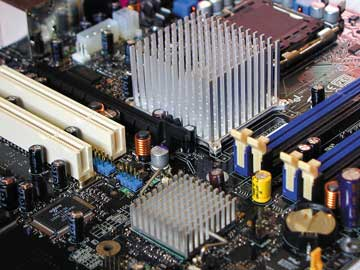
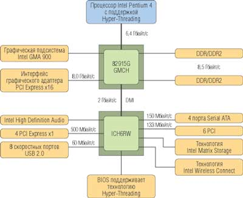
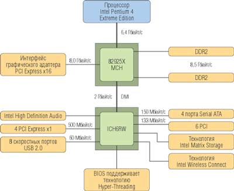
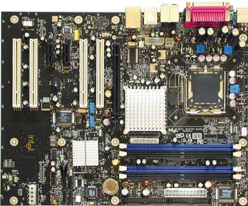
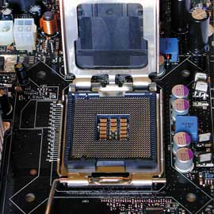

Александр Семенов, Евгений Рудометов
Системные платы, как известно, относятся к числу важнейших элементов современных компьютерных систем. Выбор оптимальной платы для ПК - это сложная и ответственная задача, успешное решение которой определяет не только функциональные возможности компьютера, но нередко также устойчивость и надежность его работы. Связано это с тем, что сейчас разработчики переносят на системную плату все больше элементов и узлов, которые ранее реализовались в виде плат расширения. В результате конструкция становится все сложнее, а требования к дизайну - все строже. Возрастают требования и к полупроводниковым элементам системных плат, их функциональным возможностям, архитектуре и надежности.
Сегодня на компьютерном рынке представлены изделия нескольких десятков производителей системных плат. Их изделия отличаются отнюдь не только ценой и упаковкой, но и функциональными возможностями, показателями надежности и устойчивости работы. Перечисленные параметры в значительной степени зависят от выбора комплектующих и качества изготовления конечных изделий. А это, в свою очередь, зависит от поставщиков микросхем, квалификации разработчиков плат, используемого оборудования и тщательности тестирования.
Функциональная сложность современных системных плат предъявляет строгие требования к их дизайну. Проблему оптимального дизайна усугубляет и рост частот шин передачи информации. Причем требования к частотам из года в год только увеличиваются, что связано со стремлением разработчиков обеспечить рост производительности выпускаемых изделий.
Учитывая ограничения, накладываемые высокочастотными элементами, созданными по современным технологиям, системные платы выполняются в соответствии с референс-дизайном. Для плат, ориентированных на процессоры с архитектурой NetBurst, референс-дизайн системных плат создан корпорацией Intel (http://www.intel.com). Многие специалисты считают, что во многих случаях именно платы от Intel могут служить эталоном качества, устойчивости, надежности, престижности.
Корпорация выпускает широкий спектр изделий, ориентированных на современные высокопроизводительные процессоры. Как известно, Intel - разработчик и крупнейший производитель процессоров и специализированных наборов микросхем системной логики. Кроме того, компания создала множество перспективных технологий и спецификаций, ставших отраслевыми стандартами и в значительной степени определяющих развитие всей компьютерной отрасли.
По поставкам системных плат корпорация Intel занимает третье место в мире. Дизайнеры плат Intel работают в тесном контакте с дизайнерами микропроцессоров, так что любая технологическая новинка становится в кратчайшее время известна всем заинтересованным лицам. Новые платы оборудованы такими современными технологиями, как PCI Express, USB 2.0 или DDR2.
Процессоры, НМС и системные платы от Intel вышли из одной семьи. Они "выросли" вместе и понимают друг друга, можно сказать, "с полуслова". У них не возникает проблем с совместимостью, их контакт стабилен в течение всего времени взаимодействия. Этот "тройственный союз" обеспечивает компьютерам стабильность и долгосрочность, производительность и надежность. Особенно ценны эти качества для тех, кто требует от своих ПК экстремальных возможностей.
Основа архитектуры системных плат
В основе архитектуры системных плат лежат высокопроизводительные наборы микросхем (НМС). Сейчас новейшие модели системных плат создаются на базе НМС семейства Intel 925 Express (Intel 925) и Intel 915 Express (Intel 915). В случае этих высокоинтегрированных элементов скорость передачи информации между НМС и контроллером памяти может достигать 8,5 Гбайт при использовании модулей оперативной памяти DDR2-533 и 6,4 Гбайт/с - для модулей DDR2-400 или DDR400. Серия НМС Intel 915 позиционируется в качестве замены популярной линейки Intel 865, а Intel 925X (рис. 1) и Intel 925XE предназначены для замены Intel 875P.
|  | Рис. 1. Микросхемы НМС Intel 925X со средствами пассивного охлаждения.
|
С НМС новых семейств информационная связь между компонентами обеспечивается намного быстрее и точнее по сравнению с предыдущими решениями Intel или их аналогами от сторонних производителей. Основные параметры НМС семейств Intel 925 и Intel 915 приведены в табл. 1 (а в табл. 2 для сравнения даны характеристики их предшественников).
Таблица 1. Основные параметры НМС семейств Intel 925 и Intel 915
| Intel 925XE Express | Intel 925X Express | Intel 915G Express | Intel 915P Express | Intel 915GV Express | |
| Рыночный сегмент | Производительный ПК, массовый ПК | Производительный ПК, массовый ПК | Массовый ПК | Массовый ПК | Массовый ПК |
| Процессор | Intel Pentium 4 (только 90-нм технология) | Intel Pentium 4 Extreme Edition, Intel Pentium 4 | Intel Pentium 4 | Intel Pentium 4 | Intel Pentium 4 |
| Технология Hyper-Threading | Оптимизирован для HT | Оптимизирован для HT | Оптимизирован для HT | Оптимизирован для HT | Оптимизирован для HT |
| Частота системной шины, МГц | 1066, 800 | 800 | 800/533 | 800/533 | 800/533 |
| Тип корпуса процессора | LGA775 | LGA775 | LGA775 | LGA775 | LGA775 |
| Число процессоров | 1 | 1 | 1 | 1 | 1 |
| Контроллер-концентратор памяти | |||||
| Микросхема | 82925XE MCH | 82925XE MCH | 82915G GMCH | 82915P MCH | 82915GV GMCH |
| Тип корпуса | 1210 FC-BGA | 1210 FC-BGA | 1210 FC-BGA | 1210 FC-BGA | 1210 FC-BGA |
| Память | |||||
| Поддерживаемый тип памяти | Двухканальная DDR2-533/400 | Двухканальная DDR2-533/400 | Двухканальная DDR2-533/400; DDR400/333 | Двухканальная DDR2-533/400; DDR400/333 | Двухканальная DDR2-533/400; DDR400/333 |
| Частота системной шины/конфигурация памяти | 1066/DDR2-400, 1066/DDR2-533, 800/DDR2-533, 800/DDR2-400 | 800/DDR2-533, 800/DDR2-400 | 800/DDR2-533, 800/DDR2-400, 800/DDR400, 533/DDR400, 533/DDR333 | 800/DDR2-533, 800/DDR2-400, 800/DDR400, 533/DDR400, 533/DDR333 | 800/DDR2-533, 800/DDR2-400, 800/DDR400, 533/DDR400, 533/DDR333 |
| Число модулей DIMM (2-канальн.) | 2 | 2 | 2 | 2 | 2 |
| Максимальный объем ОЗУ, Гбайт | 4 | 4 | 4 | 4 | 4 |
| Поддержка плотности | 256/512 Мбит/1 Гбит | 256/512 Мбит/1 Гбит | 256/512 Мбит/1 Гбит | 256/512 Мбит/1 Гбит | 256/512 Мбит/1 Гбит |
| Коррекция ошибок | ECC/без ECC | Без ECC | Без ECC | Без ECC | Без ECC |
| Интерфейс графического адаптера | PCI Express x16 | PCI Express x16 | PCI Express x16 | PCI Express x16 | Нет |
| Интегрированная графическая подсистема | |||||
| Тип | Нет | Нет | Intel Graphics Media Accelerator 900 | Нет | Intel Graphics Media Accelerator 900 |
| Частота ядра, МГц | Нет | Нет | 333 | Нет | 333 |
| Видеопамять | Нет | Нет | Технология Dynamic Video Memory | Нет | Технология Dynamic Video Memory |
| Видео/Дисплей | Нет | Нет | Поддержка HDTV, широкоэкран. ЖК-дисплеев, подключение двух дисплеев | Нет | Поддержка HDTV и широкоэкран. ЖК-дисплеев |
| Контроллер ввода-вывода | |||||
| Тип (семейство ICH6) | ICH6, ICH6R | ICH6, ICH6R | ICH6, ICH6R | ICH6, ICH6R | ICH6, ICH6R |
| Корпус ICH | 609 mGBA | 609 mGBA | 609 mGBA | 609 mGBA | 609 mGBA |
| Версия PCI | (4) PCI Express x1 | (4) PCI Express x1 | (4) PCI Express x1 | (4) PCI Express x1 | (4) PCI Express x1 |
| PCI Masters | 6 | 6 | 6 | 6 | 6 |
| Интерфейс IDE | Ultra ATA/100 | Ultra ATA/100 | Ultra ATA/100 | Ultra ATA/100 | Ultra ATA/100 |
| Serial ATA | 4 порта, ATA 150 | 4 порта, ATA 150 | 4 порта, ATA 150 | 4 порта, ATA 150 | 4 порта, ATA 150 |
| Технология сохранения данных | Intel Matrix Storage с ICH6R | Intel Matrix Storage с ICH6R | Intel Matrix Storage с ICH6R | Intel Matrix Storage с ICH6R | Intel Matrix Storage с ICH6R |
| Число портов USB 2.0 | 8 | 8 | 8 | 8 | 8 |
| Сетевой адаптер MAC | Есть | Есть | Есть | Есть | Есть |
| Выделенная сетевая шина Gigabit Ethernet | Есть | Есть | Есть | Есть | Есть |
| Интегрированная аудиоподсистема AC'97 | Intel High Definition Audio, AC'97/20-разрядная | Intel High Definition Audio, AC'97/20-разрядная | Intel High Definition Audio, AC'97/20-разрядная | Intel High Definition Audio, AC'97/20-разрядная | Intel High Definition Audio, AC'97/20-разрядная |
| Управление подсистемой ввода-вывода | SMBus 2.0/GPIO | SMBus 2.0/GPIO | SMBus 2.0/GPIO | SMBus 2.0/GPIO | SMBus 2.0/GPIO |
Таблица 2. Основные параметры НМС семейств Intel 875 и Intel 865
| Intel 875P | Intel 865G | Intel 865PE | Intel 865P | Intel 865GV | |
| Рыночный сегмент | Производительный ПК, массовый ПК | Массовый ПК | Массовый ПК | Массовый ПК | Массовый ПК |
| Процессор | Intel Pentium 4 | Intel Pentium 4 | Intel Pentium 4 | Intel Pentium 4 | Intel Pentium 4 |
| Технология Hyper-Threading | Оптимизирован для HT | Оптимизирован для HT | Оптимизирован для HT | Поддерживает HT | Оптимизирован для HT |
| Частота системной шины, МГц | 800/533 | 800/533/400 | 800/533/400 | 533/400 | 800/533/400 |
| Тип корпуса процессора | MPGA478 | mPGA478 | MPGA478 | mPGA478 | mPGA478 |
| Число процессоров | 1 | 1 | 1 | 1 | 1 |
| Контроллер-концентратор памяти | |||||
| Микросхема | 82875P MCH | 82865G GMCH | 82865PE MCH | 82865P MCH | 82865GV GMCH |
| Тип корпуса | 1005 FC-BGA | 932 FC-BGA | 932 FC-BGA | 932 FC-BGA | 932 FC-BGA |
| Память | |||||
| Поддерживаемая память | Двухканальная DDR400/333/266 | Двухканальная DDR400/333/266 | Двухканальная DDR400/333/266 | Двухканальная DDR333/266 | Двухканальная DDR400/333/266 |
| Частота системной шины/конфигурация памяти | 800/400, 800/333, 533/333, 533/266 | 800/400, 800/333, 533/333, 533/266, 400/333, 400/266 | 800/400, 800/333, 533/333, 533/266, 400/333, 400/266 | 533/333, 533/266, 400/333, 400/266 | 800/400, 800/333, 533/333, 533/266, 400/333, 400/266 |
| Число модулей DIMM (2-канальн.) | 2 | 2 | 2 | 2 | 2 |
| Максимальный объем ОЗУ, Гбайт | 4 | 4 | 4 | 4 | 4 |
| Поддержка плотности | 512/256/128 Мбит | 512/256/128 Мбит | 512/256/128 Мбит | 512/256/128 Мбит | 512/256/128 Мбит |
| Коррекция ошибок | ECC/без ECC | без ECC | без ECC | без ECC | без ECC |
| Интерфейс графического адаптера | AGP8X (1,5 В) | AGP8X (1,5 В) | AGP8X (1,5 В) | AGP8X (1,5 В) | Нет |
| Интегрированная графическая подсистема | |||||
| Тип | Нет | Intel Extreme Graphics 2 | Нет | Нет | Intel Extreme Graphics 2 |
| Частота ядра, МГц | Нет | 266 | Нет | Нет | 266 |
| Максимальный объем видеопамяти, Мбайт (объем установленной памяти RAM, Мбайт) | Нет | 64 (более 128), 32 (менее 128) | Нет | Нет | 64 (более 128), 32 (менее 128) |
| Zone Rendering | Нет | Есть | Нет | Нет | Есть |
| Видео/Дисплей | Нет | 350 МГц DAC 2x12-разрядных DVO | Нет | Нет | 350 МГц DAC 2x12-разрядных DVO |
| Контроллер ввода-вывода | |||||
| Тип | ICH5/ICH5R | ICH5/ICH5R | ICH5/ICH5R | ICH5/ICH5R | ICH5/ICH5R |
| Корпус ICH | 460 mGBA | 460 mGBA | 460 mGBA | 460 mGBA | 460 mGBA |
| Версия PCI | PCI 2.3 | PCI 2.3 | PCI 2.3 | PCI 2.3 | PCI 2.3 |
| PCI Masters | 6 | 6 | 6 | 6 | 6 |
| Интерфейс IDE | Ultra ATA/100 | Ultra ATA/100 | Ultra ATA/100 | Ultra ATA/100 | Ultra ATA/100 |
| Serial ATA | 2 порта, ATA 150 | 2 порта, ATA 150 | 2 порта, ATA 150 | 2 порта, ATA 150 | 2 порта, ATA 150 |
| Технология сохранения данных | RAID с ICH5R | RAID с ICH5R | RAID с ICH5R | RAID с ICH5R | RAID с ICH5R |
| Число портов USB 2.0 | 8 | 8 | 8 | 8 | 8 |
| Сетевой адаптер MAC | Есть | Есть | Есть | Есть | Есть |
| Выделенная сетевая шина Gigabit Ethernet | Есть | Есть | Есть | Есть | Есть |
| Интегрированная аудиоподсистема AC'97 | Улучшенная 20-разрядная | Улучшенная 20-разрядная | Улучшенная 20-разрядная | Улучшенная 20-разрядная | Улучшенная 20-разрядная |
| Управление подсистемой ввода-вывода | SMBus 2.0/GPIO | SMBus 2.0/GPIO | SMBus 2.0/GPIO | SMBus 2.0/GPIO | SMBus 2.0/GPIO |
Высокопроизводительные системные платы
НМС семейств Intel 925 и Intel 915 позволяют создавать многофункциональные системы, обеспечивающие высокую скорость обработки мультимедийной информации (для примера на рис. 2 и 3 показаны структуры ПК на базе НМС Intel 915G и Intel 925X). Отметим, что решения на основе НМС Intel 925X и его более мощной модели 925XE обладают большей производительностью.
|  |
| Рис. 2. Структура компьютера с НМС Intel 915G.
|
|  |
| Рис. 3. Структура компьютера с НМС Intel 925X.
|
В качестве примера системной платы, созданной на основе НМС Intel 925X, можно привести модель Intel D925XCV (рис. 4). Основные ее параметры таковы:
- процессор: Intel Pentium 4 с Socket 775;
- НМС: Intel 925X (82925X + ICH6R);
- память: 4 DIMM DDR2 SDRAM (до 4 Гбайт DDR2-533 или DDR2-400);
- видеосистема: PCI-E x16 (до 8 Гбайт/с);
- аудиосистема: Intel High Definition Audio, 7.1-канальная реализация;
- слоты расширения: 4 PCI, 2 PCI-E x1 (до 500 Мбайт/c);
- накопители (порты): 1 флоппи-дисковод, 1 параллельный ATA-66/100, 4 Serial ATA с поддержкой RAID 0/1 и SATA Matrix RAID;
- разъемы задней панели: PS/2 (мышь и клавиатура), LPT, COM, S/PDIF-Out, 4 USB, 1 FireWire, RJ-45 (Gigabit Ethernet), аудио (Center/Sub, Rear, Mic-In, Line-In, Front);
- разъемы внутренние: 4 USB 2.0, 2 FireWire, аудио с CD/DVD, датчика открытия корпуса, аудио и S/PDIF;
- разъемы вентиляторов: 4 (3 с возможностью управления).
|  | Рис. 4. Системная плата Intel D925XCV.
|
Технологии новой архитектуры
НМС семейств Intel 925 и Intel 915 позволили реализовать новые технологии, недоступные устройствам предыдущего поколения.
Три ключевых компонента
В новой платформе корпорация Intel впервые обновила сразу три ключевых компонента компьютера. На смену модулям оперативной памяти DDR SDRAM пришли модули DDR2 SDRAM, порт графических карт AGP сменила шина PCI Express (предыдущее название 3GIO), а вместо процессорного разъема Socket 478 теперь используется разъем Socket LGA 775, ранее анонсированный как Socket T.
Особенностью процессоров Intel нового конструктива стало то, что они больше не имеют привычных ножек, которые сменились контактными площадками. Соответствующие же контакты-проводники, исполняющие роль ножек, стали атрибутом нового процессорного разъема - Socket LGA 775 (рис. 5), расположенного на системной плате. Такое решение позволяет избежать повреждения тесно расположенных тонких ножек при транспортировке и хранении. Кроме того, переход к новому конструктиву процессора позволил снизить его себестоимость (за счет, впрочем, некоторого повышения стоимости разъема на плате). Кстати, сам процессор закрепляется в разъеме новой конструкции с помощью прочной металлической рамки. Такое решение исключает повреждение чрезвычайно уязвимых контактных ножек, вызванных неосторожными манипуляциями. В частности, с новыми процессорами можно не опасаться, что сдвиг современного тяжелого радиатора выведет дорогостоящий процессор из строя.
|  | Рис. 5. Процессорный разъем Socket LGA 775.
|
Для новой платформы были выпущены НМС Intel 915G, Intel 915P и Intel 915GV, предназначенные для массовых сравнительно недорогих решений. Для высокопроизводительных систем предлагаются НМС Intel 925X и выпущенный несколько месяцев спустя его более мощный вариант Intel 925XE. В обозначениях этих НМС символ "G" обозначает встроенную графику, "V" - отсутствие возможности подключения внешней видеокарты, "E" - улучшенный, высокопроизводительный вариант.
Следует отметить, что в новой платформе в подсистеме оперативной памяти применяются модули нового стандарта DDR2 с частотой 400 и 533 МГц. Более высокая по сравнению с наборами семейства Intel 915 производительность Intel 925X и Intel 925XE достигается в основном за счет оптимизации конвейера потока данных для каналов оперативной памяти компьютерной системы.
Развивая варианты платформы со встроенной графикой, Intel разработала и выпустила НМС Intel 915G и 915GV, позиционируя их в качестве основы системных плат для массовых систем. Новая графическая подсистема носит официальное название Intel GMA 900 (Intel Graphics Media Accelerator 900). Она обеспечивает повышенную производительность встроенных графических средств по сравнению с предшествующими решениями. Остается добавить, что НМС Intel 915G допускает использование внешнего видеоадаптера, а набор Intel 915GV ограничивается только встроенными в него графическими средствами. Для подключения внешних графических средств служит высокоскоростной интерфейс PCI Express x16 с пропускной способностью 4 Гбайт/с в каждом направлении.
Система ввода-вывода
В новых НМС семейств Intel 915 и Intel 925 нашли дальнейшее развитие и средства ввода-вывода. За эти средства традиционно отвечает специальный компонент, представленный микросхемами линейки ICH (Integrated I/O Controller Hub). Необходимо отметить, что для платформ, архитектура которых базируется на НМС семейств Intel 915 и 925, созданы четыре варианта этих микросхем - ICH6, ICH6R (символ "R" в обозначении означает поддержку функций RAID), ICH6W и ICH6RW. Последние два варианта, предусматривающие реализацию беспроводных средств Wi-Fi, вскоре после объявления были заморожены ввиду экономической нецелесообразности их массового выпуска в настоящее время.
В качестве средств подключения плат расширения сохранен традиционный интерфейс PCI, однако для подключения скоростных плат реализован более скоростной интерфейс PCI Express x1.
В новых НМС поддерживаются средства высококачественного воспроизведения звука, получившие наименование Intel High Definition Audio (ранее известны как Azalia). Эти средства, пришедшие на смену традиционным решениям AC'97, обеспечивают поддержку 192-кГц, 24-разрядного, восьмиканального звука. Это значительно повышает качество воспроизведения звука у встроенных в архитектуру системных плат аппаратно-программных средств.
Соответствующей коррекции подверглась и система накопителей, реализованная в микросхемах линейки ICH6. Так, в новом варианте этой системы число портов Serial ATA увеличено до четырех. В дополнение к этому в дисковой подсистеме повышены уровни производительности и защиты данных. Это обеспечивают фирменные средства Intel Matrix Storage, имеющие, в частности, функцию RAID. Функция RAID в новой реализации позволяет совместить скорость массива RAID 0 с надежностью массива RAID 1. Следует отметить, что данное решение предусматривает использование всего двух жестких дисков вместо четырех в предыдущих решениях. Это обстоятельство значительно снижает стоимость реализации высоконадежной дисковой подсистемы.
Инновации во имя долговечности
Реализуя в своих изделиях новейшие компьютерные технологии, поддержанные соответствующим специализированным ПО, корпорация Intel обеспечивает своим пользователям новые удобства, в том числе предназначенные для повышения надежности и долговечности. В качестве примера можно привести технологии Intel Active Monitor и Intel Precision Cooling Technology.
Intel Active Monitor. С помощью этой технологии пользователю будет очень просто контролировать самые разные параметры работающей системной платы: температуру, напряжение, скорость вращения вентилятора. Intel Active Monitor может самостоятельно устанавливать пределы, при достижении и превышении которых монитор бьет тревогу. Больше контроля - следовательно, меньше конфликтов, меньше износ элементов.
Intel Precision Cooling Technology. Инновационная охлаждающая технология, которая обеспечивает текущую стабильность системы и сохраняет работоспособность ресурсов ПК. При помощи этой технологии контролируется скорость вращения вентилятора, снижается шум и экономится энергия.
Средства эксплуатации
Корпорация снабжает свои системные платы аппаратными и программными средствами, реализующими перспективные технологии управления системой. Многие из этих средств полностью бесплатны и входят в комплект либо предоставляются за относительно невысокую плату. Охарактеризуем в качестве примера некоторые из этих технологий.
Intel Express Installer. Трудно представить себе что-то более простое: достаточно вставить компакт-диск в дисковод, нажать на клавишу мыши, и через 10 мин система Windows уже загружена на ПК. Именно Intel Express Installer при помощи своего меню с естественной структурой организации обеспечивает такую высокую скорость установки.
Intel Integration Toolkit. Эта программа автоматически определяет конкретную конфигурацию компьютера пользователя, изучает все параметры и устанавливает оптимальные параметры всех составных частей ПК. Это не только обеспечивает наиболее эффективное функционирование компьютера, но и экономит пользователю время и нервы.
Intel Express BIOS Update. Пользуясь этим средством, с Интернет-сайта Intel всегда можно скачать ПО для обновления BIOS на ПК пользователя. При помощи Intel Express BIOS Update можно проводить загрузку СD и запуск DOS. Специальное меню с инструкциями делает работу с ним простой и удобной. Intel Express BIOS Update можно отправлять пользователям по электронной почте.
Intel Rapid BIOS Boot. При помощи этой функции загрузка BIOS занимает всего 20 с, а функциональность, качество и стабильность системы при этом не страдают. Экономия даже секунд очень важна, если помножить ее на тысячи компьютеров в крупной компании. Таким образом, и эта функция в конечном счете экономит пользователям время и деньги.
Эксплуатация и сервис
Интеграция системных плат Intel в ПК очень проста и выполняется буквально "одним движением руки". Корпорация предусмотрительно снабжает пользователя всей информацией для этой установки, удобными аппаратными и программными процедурами. Специальное ПО сопровождает и весь процесс эксплуатации системных плат, экономя пользователю время и позволяя избегать неприятных ситуаций.
Сертификация и контроль производства. Решения корпорации Intel характеризуются системным подходом. Все системные платы, НМС и процессоры в процессе производства подлежат строжайшему контролю. Обстоятельные тесты гарантируют правильное управление мощностью и совместимость с более чем 350 наименованиями другого оборудования, ПО и сетевых продуктов. Все системные платы Intel соответствуют требованиям сертификации Microsoft WHQL. Подробную информацию о результатах тестирования продуктов Intel можно найти на сайте корпорации (http://www.intel.com/developer). За счет таких достаточно больших затрат достигается высокая надежность и низкие потери при эксплуатации ПК.
Оптимальное соотношение цена/качество. Системные платы Intel предлагают оптимальное соотношение цена/качество. Действительно, стоимость заготовки достаточно велика, но нужно принимать во внимание не только ее, но и общую стоимость владения.
Трехлетняя гарантия. Как неоднократно подчеркивали руководители Intel, корпорация уделяет большое внимание качеству своей продукции (для чего, собственно, и проводятся разнообразные тесты). По заверениям специалистов, необдуманных и стремительных выпусков продукции с высоким риском ошибок не бывает в принципе. Продукты тестируются и улучшаются до тех пор, пока не будет уверенности в том, что все их составные части отвечают самым высоким стандартам качества. По этой причине корпорация Intel может себе позволить полную трехлетнюю гарантию на все свои "коробочные" продукты - отметим, что это достаточно долгий срок для изделий ИТ-отрасли.
Авторизованные дистрибьюторы. Поставки через авторизованных дистрибьюторов Intel дают покупателю гарантию надежности и совместимости всех приобретенных компонентов. Именно поэтому целесообразно использовать преимущества сертифицированных решений (сертификат удостоверяет подлинность продукта). Кроме того, авторизованные дистрибьюторы могут предложить покупателям более гибкие схемы оплаты, развитую логистику и техническую поддержку.
Гарантийное обслуживание. Благодаря программе Advanced Warranty Replacement (AWP) 24 часа в сутки пользователи могут обменять свои некачественные системные платы у Intel Product Integrator и Intel Premier Provider.
Заключение
В заключение еще раз подчеркнем, что системные платы корпорации Intel для настольных ПК обеспечивают преимущество при построении ПК за счет высокой стабильности и надежности. В производстве системных плат корпорация использует самые современные технологии. Сочетание НМС, системных плат и процессоров Intel гарантирует высокую совместимость и надежность системы. Благодаря развернутой системе тестов Intel (при сохранении невысокой цены) достигается высокая стабильность элементов. Обеспечена совместимость с оборудованием и ПО других производителей. Предоставляется трехлетняя гарантия на системные платы.
Специальные средства для конфигурации системы делают ее интеграцию простой и быстрой. Для участников программы Intel Channel предлагается поддержка 24 ч в сутки 7 дней в неделю. Обеспечен достойный сервис и гарантированная замена дефектных системных плат в течение 24 ч (в Европе).